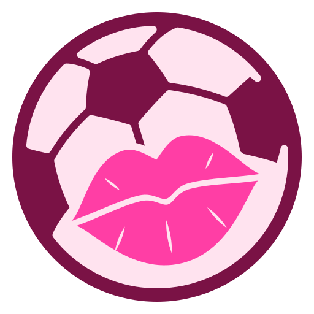
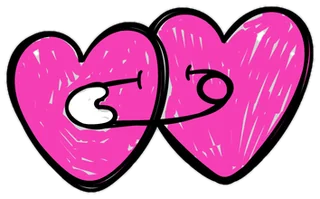

Rumor
Primera Estelar · Mercado de pases
¿Se nos va? El misterio de Dante Robledo
El goleador de Atlético Bahía Dorada anda muy callado a diez días del cierre del mercado. Y aquí el silencio también es noticia.
Leer el chisme completo
Elige tu vibra
El fútbol, con labial.
Hola, titulares. Aquí el chisme de cancha llega con fuente y con semáforo, y las reglas se explican como merecen: con drama, con datos y sin condescendencia.
Primera Estelar · Mercado de pases
El goleador de Atlético Bahía Dorada anda muy callado a diez días del cierre del mercado. Y aquí el silencio también es noticia.
Leer el chisme completoLiga Aurora · Vestuario
Renata Solís dejó de ser capitana después de seis temporadas. Su respuesta llegó en el minuto 88, sin decir una palabra.
Leer el chisme completoPrimera Estelar · Clásico del Puerto
Dos horas antes del clásico, el once titular ya circulaba en redes. El DT habla de traición. Nosotras tenemos preguntas.
Leer el chisme completoHay fuente oficial o es un hecho público. Lo puedes repetir en el grupo sin miedo.
Hay una fuente identificable, pero no oficial, y siempre te decimos cuál es.
Es opinión de Muak y así te lo decimos. Aquí nadie presenta una teoría como un hecho.
Clase de Cancha del día
Es como una historia de Instagram: lo que cuenta es dónde salías en el instante exacto en que tu amiga tomó la foto, no a dónde corriste dos segundos después. Salir en la foto no es un problema; el problema es meterte en el drama.
Ver la regla en serioPalabra del día
Adelantarse antes de tiempo. "Decir 'te amo' en la segunda cita es offside sentimental."
Hay más palabras así en el Diccionario Rosa, para que hables fútbol en nuestro idioma sin perder precisión.

Próximamente
Elige tu gatita, vístela con la camiseta de tu club y deja que ella te cuente el partido en vivo. Estamos preparando un perfil hecho a tu medida, porque ninguna titular es igual a otra.
Avísame cuando esté lista